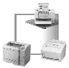
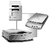
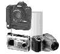

|
|
| 当前位置：电脑报电子版 > 1999 年 > 48 期 > OA专刊 > 外面的世界很精彩——1999年常用外设技术与回顾 |
| 《 外面的世界很精彩——1999年常用外设技术与回顾 》 |
| 近两年来，技术不断进步，计算机产品价格持续下滑，外设喷墨打印机和扫描仪相继进入了家用市场，激光打印机也早已被广大办公用户所接受，成为了名符其实的“针打终结者”。外设与PC机的配置比例正在不断地提高，许多用户在购买PC机时都要顺便选择一台打印机或扫描仪，有的用户甚至还会购买一台数码相机，从而搭建起一套完整的数码影像系统。 随着计算机外设市场日趋火爆，各厂商之间的竞争也变得更加激烈，进入1999年后，各厂商竞相开发新技术，推出大量新产品，以适应市场变化的趋势，下面我们就来回顾一下1999年喷墨打印机、激光打印机、扫描仪、数码相机四种常用外设技术与市场的发展情况。 喷墨打印机——三分天下 随着喷墨打印技术的日渐成熟，喷墨打印机以其较低的价格、良好的打印效果、能够以低成本输出彩色等优点赢得了广大家庭用户、专业设计人员和部分办公用户的青睐，其销量迅速超过了激光打印机和针式打印机，成为了国内打印机市场中的主流，同时也带动了整个打印机市场的发展。进入1999年后，喷墨打印机厂商之间的竞争更加激烈，它们纷纷推出大量新型产品，喷墨打印机的销量也继续保持较大幅度的增长。·三强相争，新品迭出 由于制造喷墨打印机的关键技术掌握在日美少数几家厂商手中，因此喷墨打印机市场的竞争主要在爱普生、佳能、惠普和利盟等几家厂商之间集中展开，其中尤其以前三家的实力最强，喷墨打印机市场基本上都被它们所瓜分，而利盟由于进入中国市场的时间还不长，虽然经过两年多的拼搏也争得了一席之地，但尚未真正形成大气候。爱普生在喷墨打印机市场的影响力是有目共睹的，它的产品系列多，技术更新快，无论是高端市场还是低端市场，都有与之相适应的完美解决方案。爱普生本来是国内针式打印机市场的老大，介入喷墨打印机市场的历史比佳能要短。前两年爱普生除了致力于开发适合市场需要的新技术新产品外，还在广告宣传上投入了大量精力，请到了香港当红影星朱茵做广告，在IT媒体、电视和广播上全面出击，把Photo打印的观念传递到了千家万户，并成功地将四色、六色打印等技术引入到了家用市场，从而为自己确立了在国内喷墨打印机市场尤其是家用市场上的地位。不过，进入1999年以后，爱普生在广告宣传上有所放松，可能会让其它厂商得到一个反攻的机会。今年爱普生继续推出了不少新产品，其中针对家庭用户的有Stylus Color 460、Stylus Color 660，针对商业用户的有Stylus Color 900，针对专业用户的有Stylus Photo 710、Stylus Photo EX2、Stylus Photo 750、Stylus Photo 1200、Stylus Photo750 Millennium，另外还有一款智能数码照片打印机IP－100和大幅面打印机Stylus Pro 9000，从这么多新产品中可以看出爱普生的研发实力的确非同一般。 佳能曾是中国喷墨打印机市场上的老霸主，但去年却不敌爱普生的猛烈攻势，不过进入1999年以来，佳能开始了自己的反攻，在不断推陈出新的同时，也加大了广告投入的力度，邀请了正走红的“小燕子”赵薇来大做广告，希望能够夺回失去的市场份额，事实上此举已初见成效，对爱普生喷墨打印机的销量产生了不小的冲击。今年佳能推出的新产品比爱普生要稍少一些，其中针对家庭用户和小型办公用户的有BJC－265SP、BJC－2000SP，针对专业用户的有BJC－5100、BJC－6000、BJC－7100，大幅面打印机有BJ－W700。惠普历来都把市场重点放在激光打印机上，但对于开拓喷墨打印机市场也从来没有放松过，它依靠自己的品牌和产品质量优势成功地取得好成绩。今年惠普又相继推出了多款商用和家用喷墨打印机，力争在原有的市场基础之上有所突破，这些新产品包括针对家庭用户和小型办公用户的DeskJet 420C、DeskJet 610C、DeskJet 810C，针对商业用户的DeskJet 880C、DeskJet 830C，针对专业用户的DeskJet 970Cxi，还有大幅面彩喷DesignJet 1000等。 ·新技术层出不穷 今年推出的各款新型喷墨打印机包含了很多新技术，这些技术使得喷墨打印机的打印精度更高，普遍达到了1440DPI，打印速度更快，已有多款喷墨打印机可以打印12ppm（每分钟页数），图像打印效果更好，照片打印效果已经几乎可以乱真。在打印技术方面，爱普生继续利用由微压电打印头、快干墨水、精细图像半色调调整技术和照片质量打印纸组成的PPIS（完美成像系统）来实现高质量的照片打印。在Stylus Color 900中，爱普生还通过增加喷嘴的数量和独有的智能墨滴变换技术实现了12ppm的高速打印。佳能则继续改进由多重色调打印技术、墨滴调整技术和图像优化技术组成的Photo Realism技术，在BJC－7100中成功地实现了25重色调精细打印。惠普在今年推出了第三代“富丽图”色彩分层技术和第三代智能聚焦技术，并在DeskJet 970Cxi中首次采用了这两种新技术，使得DeskJet 970Cxi的打印质量比以前的机型有很大的提高，另外DeskJet 970Cxi还是业界首台实现了自动双面打印的喷墨打印机。 在墨水方面，使用六色墨水已成为潮流，六色墨水可以使输出的色彩更加丰富，色泽更加真实，过渡更加自然，从而得到更高的打印质量。爱普生和利盟已有多款产品使用了六色墨水，而佳能更在BJC－7100中创造性地采用了七色墨水系统。另外，各厂商推出的新型墨水大多具有快干、防水、适用于普通纸打印等特点。 在接口方面，多数喷墨打印机都提供了EPP高速并口，有的机型还同时提供有USB接口，DeskJet 970Cxi、Stylus Color 900等高速打印机还配备了网络接口，可以扩展成为网络打印机。 在打印介质方面，喷墨打印机可以使用的介质种类相当丰富，透明胶片、光面纸、高光纸、光面胶片、转印纸、普通纸、信封等等介质均可使用。可打印的尺寸规格也趋于多样化，从明信片到A3大小的海报，甚至大型横幅都能打印。 激光打印机——掀起网络打印浪潮 与喷墨打印机相比，激光打印机具有高速、低噪音、低打印成本和极高的文本打印质量等优点，但激光打印机的价格比较贵，彩色激光打印机的价格更是高高在上，因此激光打印机更多地被现代办公用户所接受，家庭用户很少会购买激光打印机。不过，激光打印机将是未来打印机市场的主流，这一点已为各厂商和广大用户所认识。 1999年中，国内激光打印机市场仍然表现出平稳增长的势头，各厂商在竞争之中打得更多的是技术创新牌，价格战并不太激烈，因此市场竞争显得不温不火。从市场格局来看，业界老大惠普继续以较大优势保持其领先地位，爱普生、联想、施乐、利盟、方正、佳能等厂商紧随其后，其中介入激光打印机市场并不太久的爱普生今年的表现当让人刮目相看，而联想和方正两个国内厂商在实力甚强的竞争对手的围攻之下从容应战，仍然取得了较好的成绩。 ·网络打印趋势明显 激光打印机现阶段的目标客户群主要集中在办公领域，在这种环境下，一个办公室或一个部门的人员往往需要使用同一台激光打印机，而最为有效地使用方法就是通过网络来共享打印机。共享的方法有两种，一种是将打印机通过并口连接到位于网络中的一台计算机上，这台计算机通过共享设置来允许其它计算机使用打印机，另一种方法是把专用的打印服务器（通常是一块特殊型号的网卡）安装到打印机之中，然后将打印机直接挂在网络上，由打印服务器负责接收打印数据，并交给打印机来输出。第二种方法是真正意义上的网络打印，可以实现高速打印，并且不会因为计算机未开机或出现故障而无法打印。网络打印本身并非一个新概念，在国外已有多年的历史，我国的计算机应用起步较晚，在前几年中对网络打印的需求并不强烈，然而在最近一两年中，计算机网络在办公领域迅速普及开来，加上人们早已不满足于使用针式打印机来打印公文，所以网络激光打印已经具备了推广应用的前提条件。  各厂商都看到了网络激光打印正在国内兴起的这一市场变化趋势，今年推出了不少专门的网络打印机，并且其它绝大部分普通机型也都具备扩展成网络打印机的功能。惠普在今年重新大张旗鼓地宣传网络打印的概念，于2月份推出LJ6系列的换代机型LJ2100/M/TN系列中的2100TN是一款网络打印机，内置有打印服务器，其余两种机型也都可以很方便地扩展成网络打印机，5月份继续推出了网络打印机LJ4000的升级机型LJ4050。爱普生近期推出的N2010、N4000＋、C8200等型号的激光打印机也都具备实现网络打印的功能。 ·技术竞争激烈 激光打印机市场中的技术竞争相当激烈，各厂商都对自己特有的技术大加宣传，以此作为压制对手和吸引客户的手段。惠普激光打印机使用的部分技术有JetSend自动识别技术，JetPath升级技术等等，爱普生激光打印机使用的部分技术有分辨率增强技术，灰度增强技术，解析度增强技术等等。佳能彩色激光打印机使用的部分技术有ITB中间传输带技术，低油墨粉技术，全自动双面打印技术等等。国内的联想则重点突出了中文打印和本地化特色，其激光打印机使用的部分技术有高速中文打印技术，中英文PCL语言，针打驱动仿真技术，防卡纸技术，长寿命陶瓷硒鼓技术，超精细墨粉技术，图像增强技术，内存管理技术等等。在技术进步的推动之下，激光打印机在1999年继续朝着更快、更高、更强的方向发展。更快是指为了满足办公打印的需要，激光打印机的输出速度越来越快，现在只有极少数低端激光打印机的输出速度还在10ppm以下，其它产品的输出速度都在10ppm到40ppm之间，这一点是喷墨打印机暂时无法超越的。更高是指激光打印机的分辨率越来越高，目前已经从600DPI发展到了1200DPI，这种分辨率已能完全满足日常办公及部分专业应用的要求。更强是指激光打印机的功能越来越强大，不少激光打印机具有加密打印、输出水印、校对打印、快速复印、作业保存、多份分拣等功能。 扫描仪——硝烟正浓 在1998年中，扫描仪市场经历了一场残酷的价格战，各厂商为了提高自己的市场占有率而拼命压价，这场让不少中小厂商感到苦不堪言的战争为用户带来了实惠，原来需要二三千元以上的扫描仪现在只要一千元左右即可买下，扫描仪进入家用市场终于成为了现实，并最终促成了扫描仪跨入计算机主流外设的行列。1999年以来，扫描仪市场的价格战变得缓慢而有序，各厂商重点在技术创新和提高服务质量等方面较上了劲。与喷墨打印机、激光打印机和数码相机大多产自日美所不同的是，全世界70％以上的扫描仪都产自台湾，占有市场份额较大的其它品牌还有爱克发、Umax、Genius、惠普等几家大厂商。1998年的价格大战拖垮了一些中小厂商，但今年扫描仪市场上又出现不少极有实力的新面孔，佳能、IBM、柯达等大厂商纷纷试探性地推出了自己的扫描仪产品，正所谓来者不善，善者不来，这些业界老大的加入势必会扩大扫描仪市场的战火，最终对市场格局产生重大影响。·平板式扫描仪一统天下 进入1999年以来，手持式扫描仪几乎完全销声匿迹了，而大幅面扫描仪主要供某些特殊的专业领域使用，其客户群比较固定，需求量相当有限，因此目前扫描仪市场上销量占绝对多数的是平板式扫描仪。 从技术指标上来看，300DPI的扫描仪正逐渐淡出市场，普及型扫描仪的分辨率基本上达到了600×1200DPI，高端扫描仪可达1200×1200DPI甚至更高，多数新产品的色彩数都为36位，有的高达42位，这些产品的技术指标和性能足以满足绝大多数应用的要求，因此今后扫描仪的技术硬指标不会再有大的提高了。 ·技术不断创新 今年推出的新产品中已经有不少采用了CIS接触式感光技术，CIS扫描仪的感光器件由均匀排成阵列的几万个CIS器件组成，在扫描时，内部光源照射到扫描稿上后反射到CIS器件之上，CIS器件再将光信号转换成电信号。与CCD（电荷耦合）器件相比，CIS器件的优势在于制造成本低，价格比CCD器件便宜，但目前CIS器件所能达到的分辨率还与CCD器件有一定差距，并且不适合于扫描实物或凹凸不平的原稿。不过随着技术的发展，将来在扫描质量上CIS器件可望达到CCD器件的水平，今后采用CIS器件的扫描仪将成为低端市场的主力，因此不少厂商对开发CIS扫描仪产品相当重视，Microtek于今年4月推出了针对家用市场的称为“大眼睛”的SlimScan C6扫描仪，深受消费者的欢迎，清华紫光的Uniscan 630CP等产品也采用了CIS技术。由于需要传输大量的图像数据，早期的扫描仪多数采用了SCSI接口，从而实现与计算机的高速通信，但SCSI接口需要一块额外的SCSI控制卡，因此安装起来很不方便，价格也比较贵，去年很多普及型扫描仪转向了EPP高速并口，虽然传输速度有所损失，但成本很低，因此很受市场欢迎。随着支持USB总线的操作系统Windows 98以及众多USB设备的出现，今年不少扫描仪也开始采用USB接口了，可以预计在不久的将来，USB接口将成为扫描仪使用的主流接口技术。 Microtek于今年推出的一种称为“立扫得”的产品ImageDeck也颇值一提。ImageDeck内置有CPU，不需要连接计算机和软件的帮助就可以完成扫描工作，它内建有一个艾美加的ZIP驱动器和一个1.44M软驱，扫描结果可以直接存储到这两种介质的任何一种之中，然后再拷贝到PC机或MAC机上，ImageDeck还配有一个并行接口，以便与彩色打印机相连直接输出扫描图像。ImageDeck使用起来非常容易，能够进行脱机扫描的功能很适合于多人办公环境，因此受到了市场的好评。 今年部分高端平板扫描仪已经开始引入了双平台多镜头技术。采用双平台设计的扫描仪可以同时扫描普通平面反射式影像原稿和多种尺寸规格的正负片原稿，不需要另外配置厚重的TMA透射适配器，并且扫描正负片时不经过额外的玻璃，因此能够大幅提高扫描的质量和效率。多镜头组合则可以使系统具有最佳的执行效率和精度，从而获得最好的扫描效果与质量。 ·配套软件成为竞争的重头戏 与其它计算机外设不同的是，扫描仪特别依赖于包括图像处理和OCR识别等配套应用软件的支持，扫描仪如果离开了这些配套软件的支持，就难以很好地发挥其作用，为此，扫描仪厂商都随自己的产品向用户赠送一些应用软件，例如PhotoImpact、Photo Deluxe、OmniPage、TextBridge等软件，不过这些软件基本上都是简化版，功能受到一定限制，而专业版的图像处理软件及OCR软件的价格都很贵，普通用户感到难以接受。今年6月，清华紫光宣布将向购买其任何一款扫描仪产品的用户免费赠送一套专业版汉字识别系统，相当于替用户节省了2000元左右的费用，此举在国内引起了很大的反响，不仅让用户喜出望外，而且使竞争对手感到了巨大的压力。毋庸置疑，配套软件将成为今后扫描仪市场竞争的一个重点，那些配备了符合用户实际需要的应用软件的扫描仪产品将大受欢迎。 数码相机——蓄势待发 相对于打印机、扫描仪等其它外设而言，数码相机仍然算是一个新生事物。1996年柯达的数码相机产品率先闯入我国市场，1997年奥林巴斯接踵而来，形成了两强对峙之势。1998年国内媒体对数码相机进行了沸沸扬扬的宣传，与此同时，国外多家厂商都开始大举进军中国市场，索尼、三洋、尼康、爱普生、佳能、理光、爱克发、富士、卡西欧等众多品牌让消费者们目不暇接，1998年国内数码相机的销量也剧增了100％左右，不过，1999年国内数码相机市场火爆程度比去年有所降温，但我们有理由相信，随着数码相机技术的进步、价格的下降，以及配套服务设施的建立和完善，进入21世纪之时正是数码相机的一个全新时代的开始之时。·价格持续下降，百万像素已成市场主流 影响数码相机成像质量的一个关键性因素是CCD器件的分辨率，传统的35mm照相机所使用的胶卷所能达到的分辨率大约为800万像素，但数码相机只要使用200万像素左右的CCD就能达到与35mm胶卷相近的照片效果，从而能够满足大多数应用要求。CCD器件制造技术的进步和价格的下降对促进消费类数码相机的普及可谓功不可没，去年各厂商就开始主推百万像素级的产品，现在一架150万像素数码相机的价格已经跌至前几年50万像素产品的价格，从而使得消费者在心理上和经济上都能够接受数码相机。目前百万像素以下的数码相机基本上处于被淘汰的地位，百万像素以上的数码相机已经成为了市场的主流，各厂商正在努力开发两百万像素级的产品，其中一些具有代表性的产品包括有柯达的DC265（160万像素）、奥林巴斯的C－2000Zoom（211万像素）、三洋的Z400（192万像素），以及索尼的Cyber－Shot DSC－F55E（211万像素）等，专业数码相机更有超过一亿像素的产品，不过其价格实在不菲，只适用于特殊的应用场合。 在1999年中，CCD器件开始受到了CMOS光电传感器的挑战，虽然后者的图像质量暂时还没有前者好，但由于CMOS传感器对制造工艺的要求相对较低，能耗少，并且其发展潜力超过了CCD器件，所以包括Intel等在内的多家半导体生产商都在致力于开发CMOS传感器。CMOS传感器有可能在未来的几年内成为低端消费类数码相机使用的主要技术，而CCD器件更多地出现在专业数码相机中，这样，消费类数码相机的价格又将大大降低。 ·功能更强，挑战传统相机 今年推出的新型数码相机的功能也更加强大，更加完备。在镜头方面，多数消费类数码相机都具备了真正的三倍光学变焦能力，再结合数码变焦功能，使得变焦效果令人相当满意，不少数码相机还有自动曝光锁定或曝光补偿功能，从而使实现数码相机的准确曝光成为可能。在控制方式上，为了满足不同客户群的要求，不少数码相机都同时提供了手动和自动两种控制方式，例如手动调焦和自动调焦，白平衡方式也可以自动选择，或者手工选择。存储介质是数码相机的一个重要部件，目前多数数码相机使用的存储介质是闪存卡或智能卡，标准容量已从以前的4MB提升到8MB，并且智能卡已经有32MB的产品上市，随着存储介质容量的增大，部分数码相机在继续使用JPEG图象有损压缩算法的同时，还引入了无失真或极少失真的图象压缩算法，从而能够最大限度地提高照片的质量。今年索尼推出的Cyber－shot DSC－F55E数码相机使用了一种很有发展潜力的新型存储介质“记忆棒（Memory Stick）”，这种介质属于闪存卡，只有普通口香糖那么大，但存储容量可达64MB，由于记忆棒具有体积小、重量轻的优点，同时兼容性较好，所以一经推出之后就受到了业界的广泛关注和支持，看来数码相机的存储介质标准之争又要上演好戏了。除了闪存卡和智能卡外，今年推出的一些数码相机产品仍然使用了1.44M软驱或艾美加的Click!驱动器等移动存储介质，例如索尼的MVC－FD88C等，不过这类产品中多数都属于入门级的产品。 早期的数码相机在拍摄速度上不尽如人意，在需要抓拍、连拍的场合使用起来很不方便，今年有不少数码相机产品在这方面就大大超过了其前辈，不少型号的连续拍摄间隔缩短到了0.5秒以下，大大增强了其实用性。少数数码相机不仅具备连拍的功能，还能够以MPEG的格式记录和回放连续的动态影像，并能利用麦克风为动态影像或单幅照片录制音频信号，这可是传统相机所无法比拟的。 耗电量也是影响数码相机使用效果的一个因素，如果正在拍摄的兴头上电池却没有电了，无疑是一件让人扫兴的事情，不少新型数码相机在降低耗电量方面做了很多改进，同时它们配备了容量更大的可充电电池，例如锂电池等，有的还具有太阳能液晶显示器，这些都有利于延长拍摄时间，增加连续拍摄照片的张数。  早期的数码相机多采用串并口与计算机进行通信，数据传输的速度相当慢，今年已有多款数码相机配备了USB接口，提供12Mbps的传输速率，今后采用USB接口的数码相机将越来越多。 ·呼唤配套服务，拓展家用市场 今年数码相机在国内的销量继续增长，但是购买者仍然集中于新闻、摄影、教育、政府部门等办公用户，家庭用户所占的比例很小，这说明数码相机的家用市场还远远没有开发出来。数码相机比传统相机使用起来更为复杂，不仅操作有一定难度，而且需要配合电脑、打印机等设备来使用，这为普通家庭用户使用数码相机带来了困难，目前我国家庭的电脑拥有量仍然不高，在数码相机价格仍然比传统相机贵数倍的时候，期望家庭用户能够迅速转向数码相机是不现实的。 然而，家用市场是一个极具诱惑力的巨大的潜在市场，目前各厂商和销售商都在致力于克服阻碍数码相机进入家庭的各种因素。爱普生在7月率先推出了一种智能数码照片打印机IP－100，这种喷墨打印机能够直接读取数码相机的存储卡，无须借助计算机的帮助便可直接以多种模式打印数码照片，从而简化了数码照片的输出工作。今年一些厂商开始在国内筹建数码冲印中心，为用户提供打印数码照片、制作光盘等服务，以解决用户的后顾之忧，这些措施无疑会有效地加快数码相机进入家用市场的速度。 |
| 下载本期推荐软件 | 页 首 |
| CPCW网站版权所有，电脑报网站编辑部设计制作发布 |
{kind=link}
{kind=link}
{kind=link}
{kind=link}